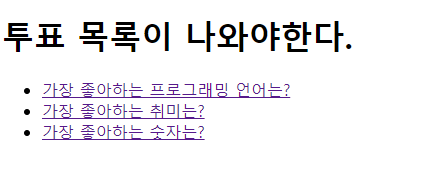

Python Django - Django 투표 프로젝트 투표 목록 제작
Python 강좌는 여러 절로 구성되어 있습니다.
- Python 강좌(1) - Python 문자열
- Python 강좌(2) - Python 제어문
- Python Django - Django 시작
- Python Django - Django 투표 프로젝트 model 제작
- Python Django - Django 투표 프로젝트 투표 목록 제작
- Python Django - Django 투표 프로젝트 투표 보기 제작
- Python Django - Django 투표 프로젝트 투표 결과 제작
- Python Django - Django 블로그 프로젝트 model 제작
- Python Django - Django 블로그 프로젝트 로그인 제작
- Python Django - Django 블로그 프로젝트 게시판 제작
- Python Django - Django 블로그 프로젝트 댓글 제작
- Python API 비 로그인식 크롤링
###프로젝트의 url수정</h3>
mysite의url을 수정해볼것입니다.- 아래의 그림과 같이
mysite의url.py파일을 수정해줄것입니다.
from django.contrib import admin
from django.urls import path, include #include 함수를 추가
urlpatterns = [
path('admin/', admin.site.urls),
path('polls/', include('polls.urls'))
# view의 함수를 명칭 혹은 계층구조로 만들수있다.
# 하지만 view의 함수를 직접 넣는것보다 계층구조로 만드는 것이 좋다.
# include함수를 사용하여 polls의 urls을 path로 잡아줄것입니다.
]
- 기본으로 존재하던
admin에 관련된path는 그대로 두겠습니다. - 새롭게 추가될
application을 반영하기 위하여poll의url을path에 추가해야합니다. - 물론 여기서 직접 입력해도 되지만 추후 정리를 위하여
include함수를 사용하여polls.url을 원격으로 지정해주겠습니다.
index를 위한 url제작
- 이제
polls의index의url을 제작해볼것입니다. - 아래와 같이
mysite의url.py파일을 수정해줄것입니다.
from django.urls import path
from . import views
app_name = 'polls' #이건 polls의 url mapping이다 라는 지칭
urlpatterns = [
path('', views.index, name='index'),
# path의 첫번째 칸의 ''의 의미는 http://localhost:8000/polls/ 현재 위치라는 의미이다.
# view.index는 view의 index를 찾아서 호출하라는 의미이다.
# path를 연결함으로써 http://localhost:8000/polls/ 여기까지 실행이 가능하게됩니다.
]
index를 위한 views를 제작
- 이제
polls의index의views를 제작해볼것입니다. - 아래와 같이
mysite의views.py파일을 수정해줄것입니다.
from django.shortcuts import render, get_object_or_404
from polls.models import Question
# view의 function이 하는 일은 request를 받아서 결과 template.html을 이용해서
# 결과 파일을 만들어 내는 일을 한다.
def index(request): # view가 가지는 함수의 첫번째 인자는 무조건 request이다.
# database에서 투표질문의 목록을 가져올것이다.
# 원래는 문자열로 표현되야 하는데.. orm을 사용하다보니 각 레코드가 question 클래스의 객체로 표현
# Question클르스의 객체로 표현.
my_list=Question.objects.all().order_by('pub_date')
# my_list는 question의 객체를 다가져와!
# order_by('pub_date')는 순서는 pub_date순서로 가져와!
# 만약 -pub_date라면 pub_date의 역순으로 가져와! 라는 의미이다.
context= {'question_list':my_list}
# 딕셔너리로 형태로 html로 전달해야한다.
return render(request, 'index.html',context)
index.html 제작
- 이전에 제작하였던
models.py에서Question class는question_text를return합니다. - 우리는
question_text을html에 띄워 선택할수있는html을 제작할것입니다. - 앞의
view.py에서 정의한index함수의context의 내부에latest_question_list를 활용해야합니다.
<!DOCTYPE html>
<html lang="en">
<head>
<meta charset="UTF-8">
<title>투표 목록</title>
</head>
<body>
<h1>투표 목록이 나와야한다.</h1>
<!-- index 함수 (view.py안에 있는)에서 질문의 목록을 줘야지 그것을 출력할수있다. -->
<!-- Question class(model.py안에 있는)의 객체 3마리가 생성되서 3개를 한번에 받기 위하여 리스트 안에 넣어서 전달받을것이다.-->
<p>출력할 투표목록이 존재하지 않습니다.</p>
<!-- endif는 여기서 if 구문을 끝낸다 라는 의미-->
</body>
</html>
- 위와 같이
index.html를 설정하였습니다. - 위의 결과를 통해 서버를 가동후 “http://127.0.0.1:8000/polls/”에 들어가면 아래와 같이 나온다. 